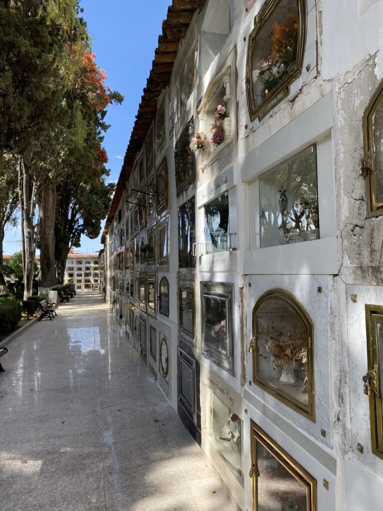

Waar de zon ons tegemoet schijnt en de vrolijke kleuren en witte bomen de straten overheersen. Waar de opzwepende Latijnse taal het rumoer opfleurt. Waar de mensen met volle plastic zakken de krioelende markt verlaten. Waar jolige backpackers aankomen, de salsa leren, barretjes uitspelen, zich steeds moedelozer op de Spaanse taal storten en binnen een week weer weg zijn. Waar de locals zich gedecideerd en ontspannen door het centrum bewegen. En waar eigenlijk niemand tevreden is.
Het is zondagochtend als ik met dichtgeknepen ogen een onbekende straat op stap. Achter de rug: een warrige nacht in een Duits feesthostel met lederhose-dragend personeel vol gretige Bolivianen die nog nooit van oktoberfest gehoord hebben. Gewapend met een lege telefoon en een uitgedroogd lichaam steek ik mijn vinger in de mond en vervolgens in de lucht. Niet veel wijzer kies ik een kant; daarheen. Het is verdacht stil op straat tot ik rond het hoofdplein een klappende meute tref. Nog ochtenddromend steek ik de lege straat over, totdat ik luidkeels teruggeroepen word. Net op tijd: een skelter met een duwer en stuurman erin raast voorbij. Zodra hij de heuveltop bereikt, springt ook de aandrijver in het voertuig, aangemoedigd door de enthousiaste menigte. De onschuldige volksactiviteit lijkt een teken van rust in dit land, maar achter de schermen zijn de problemen eindeloos.
Deze tranquilo zondag betekent de laatste dag van de eerste week Sucre, waar we met liefde in totaal twee weken blijven. Als het niet langer is. Want om de haverklap vallen hier de buslijnen uit; nu weer vanwege een stemming die niet correct is verlopen en daar zijn de Bolivianen klaar mee. Van de hosteleigenaar, tot de Spaanslerares en de taxichauffeur; iedereen is diep teleurgesteld in hun land.
Wat waren de verwachtingen hoog toen de socialistische, inheemse Evo Morales zo’n vijftien jaar geleden aan de macht kwam. Met grote ideeën om de discriminatie tegen de inheemsen uit te bannen, Bolivia eindelijk economisch mee te laten doen en de sociale verhoudingen te herstellen. In plaats daarvan moesten de boeren land inleveren, werd de exportprijs laag gehouden, ging de meeste winst naar de corrupte overheid en werden de inheemsen en stedelingen tegen elkaar opgezet. Het land klom naar de tweede plek van grootste cocaïneproducenten. Daarnaast staat Bolivia als vreemde eend in de bijt tussen landen uit het Midden-Oosten als het gaat om het meeste geweld tegen vrouwen.
De verdekte dictator bleek moeilijk weg te jagen; mede doordat hij à la Poetin en Erdogan extra termijnen voor zichzelf creëerde en de verkiezingen door censuur doordrenkt zijn. Zo erg zelfs dat al overleden mensen op de lijst namen stond die op hem hadden gestemd.
Maar ook een nieuwe leider brengt geen verbetering (momenteel is er een gewelddadige opstand gaande in Santa Cruz). Al is de inflatie stabiel, de banen zijn slechtbetaald en schaars. De overheid probeert met de beperkte middelen op wrede manieren de problemen op te lossen. Een sociaal vangnet kun je bijvoorbeeld vergeten. Een andere opvallende handelswijze is hoe het hondenprobleem wordt opgelost. Iedereen schopt namelijk zijn hond op straat bij de geboorte van een nieuwe puppy. De straten zijn daarom bezaaid met grote, langharige (soms met een trui aangekleede) blaffers. Eens in de zoveel tijd bestrooien de ambtenaren de stad daarom met gif om vervolgens vrachten vol levenloze honden af te voeren.
De meeste mensen verkiezen armoede boven een overheidsbaan, waardoor families hun hele leven bij elkaar blijven wonen om kosten te besparen.
Los van de bedelaars merk je daar als vluchtige bezoeker weinig van in hoofdstad Sucre, waar de Spanjaarden en Fransen ooit tot de laatste snik voor vochten. De inspirerende nieuwe indrukken winnen het van de steek in je hart als je bedelend kroost weigert een munstuk te geven, in de hoop het verknipte systeem niet te stimuleren. Grote, verbaasde pruilogen bij een van de jongetjes als ik in plaats daarvan een smoothie voor hem haal.
De meest enthousiaste werknemers zijn de verkeersleiders. Gekleed in een bloedheet zebrapak herinneren ze de chaotische automobilisten aan het zebrapad. Ze kunnen het niet laten om al dansend de voetgangers veilig naar de overkant te begeleiden.
De uitnodigende warmte en ons nieuwe hostel met groene tuin en pingpongtafel houdt ons vastgeketend aan de stad. Elke avond op zoek naar een nieuwe bar met nieuwe muziek. Tot dusver: melangolische en akoestische gitaarsolo’s, poging tot jazz, mariachibands onder het balkon, salsa die de heupen ontroest en vooral walgelijke hits uit mijn brugklasjaar. Op cultureel gebied maakt de lokale begraafplaats indruk. Hoe beter de doden te eren dan met kleine altaars in een glazen huisje, die samen met de gigantische tombes voor de elite een schitterende rustplaats vormen.
Les van de week: niet elke tip voor een restaurant opvolgen. Vraag Luc zijn darmen voor meer details.
